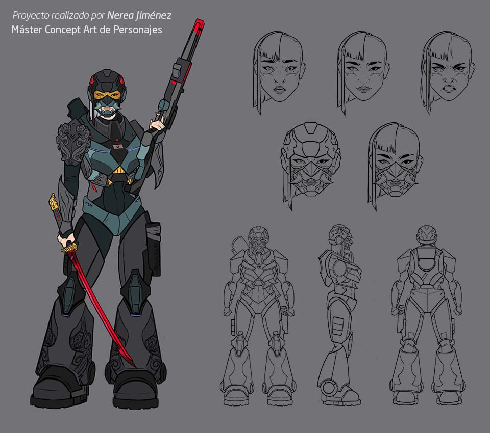

Concept Art
Los bocetos iniciales fijan el estilo visual del juego. El equipo explora la silueta de los personajes, el aspecto de los escenarios y objetos, y la paleta de colores. Las propuestas elegidas sirven de guía para quienes construyen los recursos finales.
Proyecto de Nerea Jiménez, publicado por Animum.